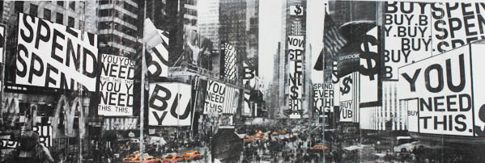
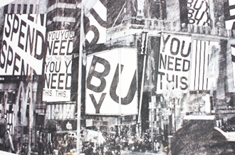
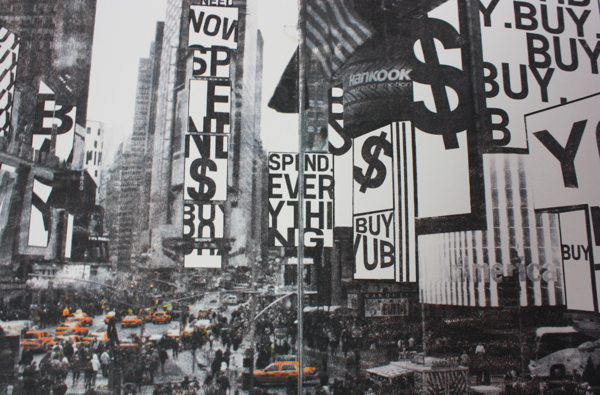
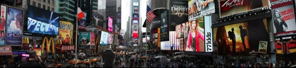

Buying Times Square
I got the idea for this project when I was visiting New York. While in Times Square, I was overwhelmed by the amount of advertisements that were just yelling at me to buy their products. I wondered what it would look like if the ads were all literal, so I brought the images I took into illustrator and made them that way. This is a solvent transfer print, created with citra-solv. 45in x 14in.